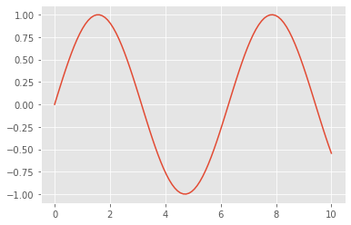
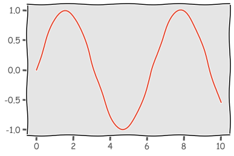
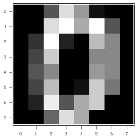
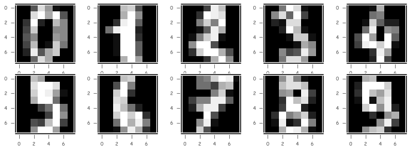

使用OpenCV和Python处理数据
Boylad · 2020-06-04
理解机器学习流程
- 加速健壮特征（Speeded Up Robust Features, SURF）
- 方向梯度直方图（Histogram of Oriented Gradients, HOG）
- 尺度不变特征变换（scale-invariant frature transform, SIFT）
使用OpenCV和Python处理数据
少量shell命令可直接使用，eg:
!ls
!pwd
使用matplotlib进行数据可视化
import matplotlib.pyplot as plt
plt.style.available
['bmh', 'classic', 'dark_background', 'fast', 'fivethirtyeight',
'ggplot', 'grayscale', 'seaborn-bright', 'seaborn-colorblind',
'seaborn-dark-palette', 'seaborn-dark', 'seaborn-darkgrid',
'seaborn-deep', 'seaborn-muted', 'seaborn-notebook', 'seaborn-paper',
'seaborn-pastel', 'seaborn-poster', 'seaborn-talk', 'seaborn-ticks',
'seaborn-white', 'seaborn-whitegrid', 'seaborn', 'Solarize_Light2',
'tableau-colorblind10', '_classic_test']
plt.style.use("ggplot")
% matplotlib inline
import numpy as np
x = np.linspace(0, 10, 100)
plt.plot(x, np.sin(x))

plt.xkcd()
plt.plot(x, np.sin(x))

from sklearn import datasets
digits = datasets.load_digits()
print(digits.data.shape)
print(digits.images.shape)
(1797, 64)
(1797, 8, 8)
# 使用NumPy的数组切片从数据集中获取一幅图像
plt.xkcd(False)
plt.style.use("seaborn-paper")
img = digits.images[0, :, :]
plt.imshow(img, cmap='gray')

plt.figure(figsize = (12, 4))
for image_index in range(10):
subplot_index = image_index + 1
plt.subplot(2, 5, subplot_index)
plt.imshow(digits.images[image_index, :, :], cmap='gray')
